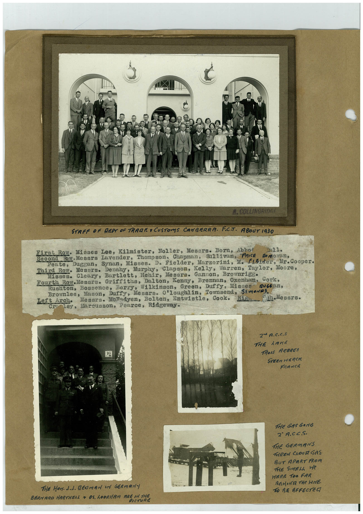

Book 1 · scan 090


Description
Transcription
Context
Review notes
Compare the machine draft with the scan. Handwriting and names need human review.
Artifacts
Edit the artifacts field in this note’s frontmatter to change these records. This summary is generated.
B01-S090-A01 — Newspaper clipping, Photo & Handwritten note — Book 1, scan 090
Types: Newspaper clipping, Photo, Handwritten note
Scope: Whole scanned page; individual items can be split out during review.
Caption: Not mapped yet.
Caption source: Not recorded yet.
Caption status: unmapped
Machine transcription
COLLINGRIDRE STAFF OF REPT OF TRAGE • CUSTOMS CANBERRA. FCT. ABOUT 1930 First Row. Misses Lee, Kilmister, Noller, Mesers. Born, Abno Bн11. Second Eow.Messrs lavender, Thompson, Chapman, Sullivan, PRICE No no van, Peate, Duggan, Synan, Misses. D. Fielder, Marzorini, M. Flilder, Mr. Cooper. Third Row. Messrs. Denahy, Murphy, Clapson, Kelly, Warren, Taylor, Moore, Misses. Cleary, Bartlett, Hehir, Messrs. Gannon, Brownrigg• Fourth Row.Messrs. Griffiths, Dalton, Kenny, Brennan, Oxenham. Cork, Rushton, Bossence, Berry, Wilkinson, Green, Duffy, Misses Brownlee, Mason, Duffy, Mesars. O'loughlin, Townsend, Simones. Left Arch• Mesers. Melodyen, Bolton, Entwistle, Cook. "th Messrs. CraTey, Marcusson, Pearce, Ridgeway. 2 A.C.C.S THE LAKE TROIs ARBRES STEEN HERCK FRANCE The Horded. Bedman if GERMANY BERNARO HARTNELL • OS. LODRIAM ARE IN THE PICTURE THE GAS GONG 2° A.CC.S. THE GERMANS THREW CROUR GAS BUT APART FROM THE SMELL We WERE TOO FAR REMIER THe WHE TO BE AFFECTEG